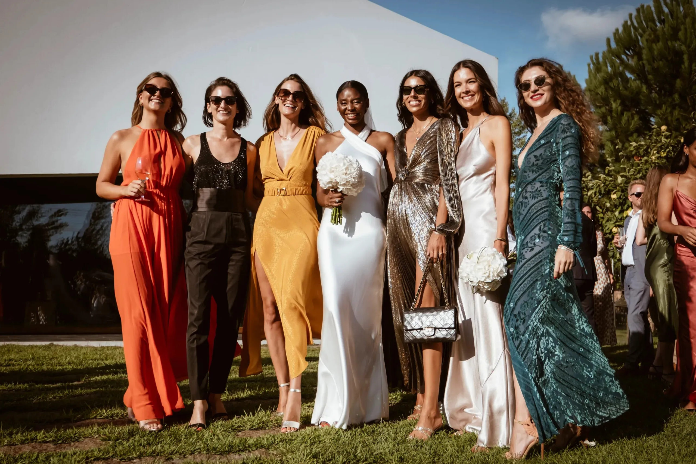
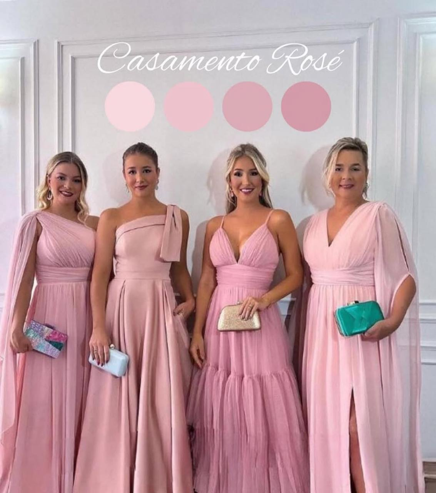

Escolha uma das opções abaixo para ver os detalhes:
Traje Convidado Masculino
Terno ou paletó, camisa e sapato social. Gravata e terno opcional.
Traje Convidado Feminino
Vestido midi ou longo em tons claros ou escuros, elegante, evitando branco.
Traje Padrinho
Terno azul marinho ou preto com gravata rosê e camisa branca.
Traje Madrinha
Vestido longo em tom rosé, conforme paleta informada.